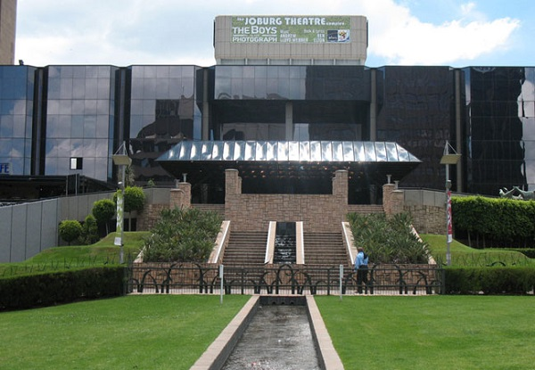

Johannesburg Art Gallery
Johannesburg Art GalleryThe Johannesburg Art Gallery, often referred to as JAG, is located in the centre of Joubert Park in downtown Johannesburg. The building was designed by Edward Lutyens, the British architect also responsible for the city’s Anglo-Boer War Memorial and houses one of the biggest art collections in the country. It's a huge point of interest for all who love art and history, something that South Africa offers in bucket loads, so JAG is one of the places to visit in Johannesburg.
 Market Theatre
Market TheatreThe Market Theatre is renowned worldwide for brilliant anti-apartheid plays that have included Woza Albert, Asinamali, Bopha, Sophiatown, You Strike the Woman You Strike a Rock, Born in the RSA, Black Dog – Inj’emnyama, as well as the premieres of many of Athol Fugard’s award-winning dramas. The Market Theatre’s history is intertwined with the cultural, social and political struggle for freedom in South Africa.

Johannesburg Theatre
The Joburg Theatre in Braamfontein is where you’ll find a variety of popular shows and their annual pantomime crowd-puller. In the past decade, The Mandela at Joburg Theatre has hosted many hit shows, including William Kentridge’s acclaimed interpretation of Mozart’s THE MAGIC FLUTE, the West End and Broadway musicals WEST SIDE STORY, CHICAGO, THE COLOR PURPLE and SPAMALOT and top-of-the-line global touring shows, such as LE GRAND CIRQUE, LORD OF THE DANCE and BRAZOUKA.
The Joburg Theatre in Braamfontein is where you’ll find a variety of popular shows and their annual pantomime crowd-puller. In the past decade, The Mandela at Joburg Theatre has hosted many hit shows, including William Kentridge’s acclaimed interpretation of Mozart’s THE MAGIC FLUTE, the West End and Broadway musicals WEST SIDE STORY, CHICAGO, THE COLOR PURPLE and SPAMALOT and top-of-the-line global touring shows, such as LE GRAND CIRQUE, LORD OF THE DANCE and BRAZOUKA.
 Goodman Gallery
Goodman GalleryGoodman Gallery is one of the most distinguished and longest-standing international contemporary art galleries. Established in Johannesburg in 1966, the gallery works with artists who are at once contemporary, influential and strive to shift perspectives and engender social transformation. Founded during the era of apartheid, Goodman Gallery offered a non-discriminatory space when museums served the agenda of the autocratic government. Since 2008, under the directorship of Liza Essers, Goodman Gallery has expanded on this legacy, shifted its focus, and introduced numerous pivotal curatorial initiatives and partnerships